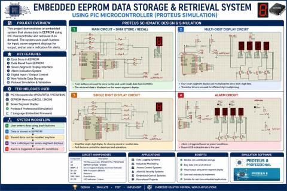

Embedded Systems · Non-volatile Storage
Embedded EEPROM Data Storage & Retrieval System
Implemented PIC-based data storage and retrieval using on-chip EEPROM, mikroC firmware and a display interface, preserving stored values across power loss.
Implemented Project
System architecture

Implementation scope
The firmware separates the value being measured or entered from the stored byte. Read-back verifies persistence, while the display exposes the retrieved value to the operator.
Engineering approach
Writing only when a value changes reduces unnecessary EEPROM writes. The public repository includes a store/read-back illustration and a reference snippet; the poster is a preview rather than a full schematic.

Visual documentation
Original project posters and interface screenshots are identified separately from explanatory source diagrams. The gallery documents this project only. Open any figure to inspect it at full available resolution.

